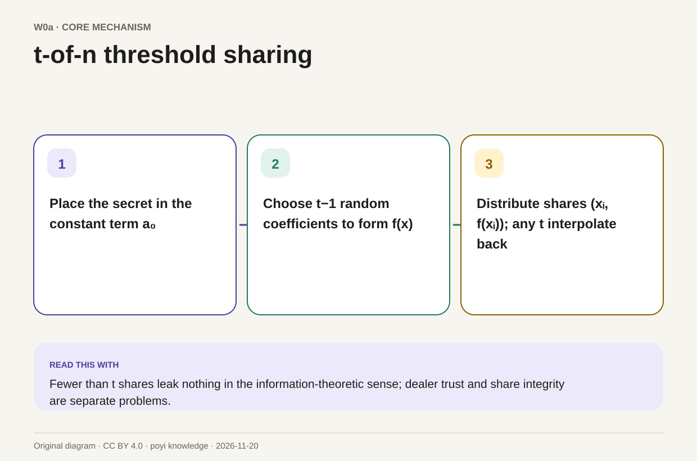
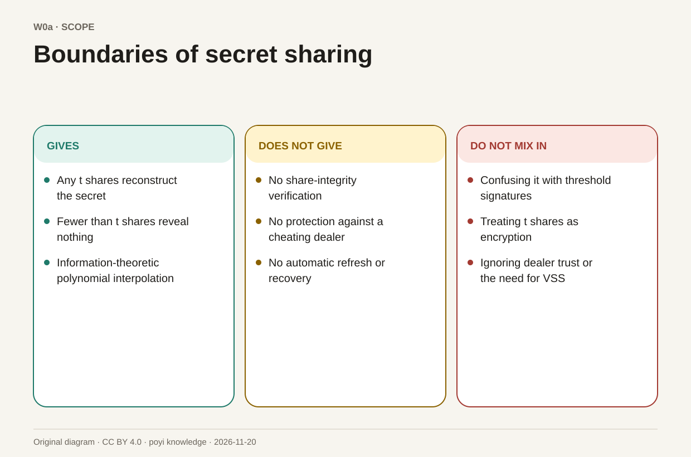

Principles
Algorithm: Shamir Secret Sharing (Shamir 门限秘密共享). Shamir's Secret Sharing (SSS) answers a very plain question: how do you split one key into n pieces so that any t of them put it back together, and one short leaves you none the wiser?
The mechanism is polynomial interpolation. Let the secret be s (it can be a large integer, or a byte string handled byte by byte):
- Pick a large prime
pand do all arithmetic inGF(p). Draw a random degree-(t−1) polynomialf(x) = s + a₁x + a₂x² + … + a_{t−1}x^{t−1}. The constant term is the secret, and the coefficientsa₁ … a_{t−1}must be uniformly random. Hand out n shares: holder i receives the valuef(i), i.e. the pair(x_i, y_i)withx_i = i. Recover the secret: take any t shares and evaluate the polynomial at zero using Lagrange interpolation:
s = f(0) = Σ_{i∈S} y_i · Π_{j∈S, j≠i} (0 − x_j)/(x_i − x_j) (mod p)
The underlying mathematics is elementary: t points determine a degree-(t−1) polynomial uniquely.
Why "one short reveals nothing" is actually true — this is the most beautiful part of Shamir, and what separates it from every other key-protection scheme. Suppose an attacker holds t−1 shares. He knows the shape of f (degree t−1) but not the remaining degree of freedom. For every secret value s' he guesses, there is exactly one polynomial consistent with both those t−1 known points and the constant term s'. In other words, every guess he makes was equally likely a priori — his effort buys him literally nothing.
This is perfect secret sharing, and its security is information-theoretic, not computational:
- No hardness assumption is needed. Not that factoring is hard, not that discrete logs are hard, not any assumption at all. - Unlimited computing power does not help. The attacker learns precisely as much as if the secret were a uniformly random value uncorrelated with the shares. - This is one of the very few cryptographic constructions that survives quantum computing. Shor's algorithm has nothing to say about it, because there is no mathematical problem to solve. One clarification: SSS is not encryption. It does not hide the secret from someone who already holds t shares, and it provides no authentication whatsoever. All it does is turn "one key" into "a key you must assemble".

Why it matters
Shamir sharing solves the most counterintuitive problem in key management: sometimes the safest way to keep a key is to break it up.
A key sitting in a safe is a single point of failure: crack the safe and it's gone, lose the safe and it's gone. Split it into three and give one to each of three people, and:
- Two colluding insiders still cannot get in (a 3-of-5 threshold). - One person quitting, vanishing or dying does not paralyse the system.
- Auditing gains a handle. Every share becomes a traceable, attributable event, rather than "somebody has a master key".
Shamir put the politics of it plainly in the closing lines of the 1979 paper: "we can give any sufficiently large majority the authority to take some action while giving any sufficiently large minority the power to block it." That is not a metaphor in a cryptography paper; it is separation of powers, stated literally.
And there is a deeper point: this is one of the very few cryptographic constructs that depends on no hard problem. RSA rests on factoring, ECC on discrete logs, AES on computational irreversibility — all of those are beliefs. Shamir sharing's security is a theorem. In a world that grows ever more dependent on "assume some mathematical problem is hard", a construction whose security is information-theoretic has value precisely because that assumption does not have to be made.
Applications
- Multi-party computation (MPC) — the native home of SSS. The BGW protocol of 1985 cuts each participant's secret input into shares, lets everyone compute on the shares, and no party ever sees another party's input. Today MPC shows up in sealed-bid auctions, privacy-preserving machine learning and cross-exchange balance proofs. - Threshold signatures: the private key is split into t shares, t signers each sign a piece, and the pieces combine into one ordinary-looking signature — while no individual ever holds the full key. FROST (RFC 9591, June 2024), the standardised two-round Schnorr threshold protocol, uses Shamir shares; Shamir himself proposed threshold RSA in 1979; BLS threshold signatures, GG18/GG20 and CGGMP21 threshold ECDSA work the same way. - Distributed key generation (DKG): Pedersen's 1991 construction means no trusted party ever generates the key at all — n participants jointly run a protocol that produces the shares, and the complete private key never exists in one place. Threshold wallets, DAO treasuries and multi-sig vaults increasingly use DKG.
- Sharded seed phrases for hardware wallets: SLIP-39 (SatoshiLabs, 2020) replaces the single 24-word BIP-39 mnemonic with several 20-word Shamir mnemonics. Trezor supported it from firmware 2.4.0 in 2019; Electrum, Sparrow, Rabby and BlueWallet support it too. This is the first time SSS reached hundreds of millions of ordinary users.
- CA offline root keys: the offline root keys of top-tier certificate authorities are distributed to a set of holders under a threshold arrangement — no single person can issue a root certificate alone, but a quorum can.
- Boards of directors and the two-man rule: reactor start keys, military key release, corporate executive separation — the examples are in Shamir's own paper. - NIST's threshold cryptography programme: NIST is driving work on VSS and threshold signatures (the PiVer verifiable secret sharing framework), which is this road moving from academia into financial infrastructure.
Limits & attacks
Shamir's mathematics has no weaknesses. The number of ways it fails in practice is long enough to be worth a list.
- "Split" is not the same as "spread". The most common failure: a 3-of-5 split whose five shares all sit in the same cloud account, the same mailbox, the same folder on the same laptop. That is no split at all — one share is enough. Shamir protects a set's mathematical property; it will not spread files across five countries for you. - The shares themselves leak. Each share is a pair
(x_i, y_i). Putting five shares in one document hands over the private key — any one holder can reassemble it. In backup procedures the moment of "write it to a USB stick and then distribute it to five people" usually leaks before distribution even happens. - The dealer must be honest. The original scheme assumes the dealer does not hand different people values from different polynomials. A malicious dealer can distribute a biased sharing — the sharing is mathematically perfect, but the secret that comes back is wrong, and you only find out at recovery time. That is precisely why verifiable secret sharing exists. - A poisoned share at recovery time: one holder submits a forged share, the interpolation result is corrupted, and the result usually does not tell you who did it. VSS commitment mechanisms exist to catch exactly this. - Randomness that is not random voids the whole thing. The proof of perfectness assumes the coefficientsa₁ … a_{t−1}are uniformly random. If the generator is biased — even slightly, even just low-entropy — "information-theoretic security" quietly becomes "information-theoretically approximately secure". This is the easiest mistake to make in all of cryptography and the hardest to audit. The randomness must come from a true entropy source or a validated CSPRNG. - Too small a field, or repeated x coordinates: when splitting byte-wise overGF(2⁸)(SLIP-39's approach) there are at most 255 usable x coordinates, so the threshold must stay well below the field size; repeated x coordinates mean repeated shares, and that must be checked. - Slow-drip theft: an attacker who can only take one share at a time still wins once they have collected t of them over months. The countermeasure is proactive refresh (proactive secret sharing, by Ostrovsky-Yung and by Herzberg et al., 1995): periodically re-share under a fresh random polynomial so the old shares expire. Static SSS cannot stop a patient adversary. - One typo during recovery: with 21 shares, 20 correct and one transcribed character wrong, the mathematics cannot tell you which one is wrong — threshold sharing provides no error correction. Real implementations therefore attach a checksum to each share (SLIP-39's word list is explicitly designed to make mistakes detectable and localisable). - After recovery: the reconstructed plaintext key is sitting in memory. "The shares are well protected" and "the process gets core-dumped" are two different problems.
- Quantum? On the contrary — this is the part that is quantum-proof. It is a genuinely rare advantage today: ECC and RSA both have to be rewritten, and Shamir does not change by a single character.

History
- November 1979: Adi Shamir publishes "How to Share a Secret" (Communications of the ACM, Vol. 22, No. 11, pp. 612–613) — two pages, and the starting point of all threshold cryptography. George Blakley independently publishes "Safeguarding Cryptographic Keys" the same year; two different insights converged. - 1979: the same paper sketches threshold RSA and gives the "majority acts, minority blocks" framing. - 1982–1985: GMW (1982) and BGW (1985) fold SSS into multi-party computation, making computation between mutually distrusting parties possible. - 1987: Paul Feldman publishes "A Practical Scheme for Non-interactive Verifiable Secret Sharing" (FOCS 1987) — discrete-log commitments let a share carry its own proof, and a cheating dealer is caught on the spot. VSS gains a usable non-interactive form.
- 1991: Torben Pedersen publishes "Non-Interactive and Information-Theoretic Secure Verifiable Secret Sharing" (CRYPTO 1991). The Pedersen commitment
g^s·h^ris perfectly hiding but computationally binding, so even a dealer with unlimited computing power learns nothing about the secret. The same year he introduces distributed key generation (EUROCRYPT 1991), which dissolves the question of "who generates the key" along with the key itself. - 1995: Ostrovsky and Yung, and independently Herzberg et al., propose proactive secret sharing — periodic refresh against gradual compromise. - 2018–2020: crypto wallets bring SSS to the mass market — Electrum 2.9 (2018) added sharded import; SLIP-39 (2020) defines composable Shamir mnemonics, with Trezor firmware 2.4.0 (2019) supporting them first. - June 2024: RFC 9591 (FROST) standardises two-round Schnorr threshold signatures, with Shamir sharing as the default way to split the private key. - The 2020s: NIST launches threshold-cryptography and VSS standardisation work (the PiVer framework and related projects) — a line that began as a 1979 paper is becoming a standard component of financial infrastructure.
Worked example & verification
Formal model and reproduction steps
[h=H(M),\quad H:{0,1}^{*}\to{0,1}^{n}]
Shamir Secret Sharing: the registered public parameters, key material or randomness, and message are mapped through the stated transformation to an output checked against the registered criterion. The worked example is a structural reproduction, not a new test vector; parameter ranges, standard versions and implementation details remain source-bound.
References
- Wikipedia search entry for Shamir 门限秘密共享. https://zh.wikipedia.org/w/index.php?search=Shamir%20%E9%97%A8%E9%99%90%E7%A7%98%E5%AF%86%E5%85%B1%E4%BA%AB
- Handbook of Applied Cryptography (Menezes, van Oorschot, Vanstone). https://www.cacr.math.uwaterloo.ca/hac/